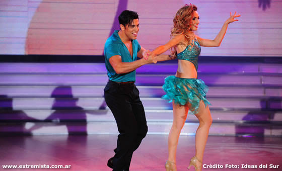

Mi pagina tratara sobre los bailes
Los bailes son el conjunto de movimientos y pasos precisamente seleccionados para que vaya a corde a la musica o la mlodia.Para mi el baile es una parte esencial a lo cual es parte de mi dia a dia.El baile me empezo a gustar cuando mi hermano me metio a clases de baile.
Los tipos de bailes que me gustan mas son merengue, salsa, bachata, samba y regueton.

1.Surgio en la republica dominicana en el siglo XIX y se transformo por completo cuando adopto el acordeon traido de comerciantes alemanes.
2.En la postura del merengue se dice que el paso basico con una pierna rigida nacio en honor a un heroe de la independencia dominicana que volvio lesionado en una pierna; al bailar, sus amigos lo imitaron arrastrando la pierna por solidaridad.
En lo personal el baile se puede tomar como un deporte o tambien como un hobby que te ayuda en mucho como lo es la coordinacion de todo tu cuerpo, el aprendizaje o memorizacion de los pasos de la coreografia
,tambien te ayuda a mover el cuerpo osea liberarte tambien en cuetion del estres o ansiedad. Para finalizar me gustaria que mas personas se iscribieran a clases de baile ya que a mi me ha ayudado bastante.
Lo que mas me gusta de bailar es que interactuo con muchas personas y salir de la monotonia y aprender nuevos pasos de baile y tambien nuevas acrobacias para cada tipo de baile o coreografia.
Todo lo importante en el baile es la tecnica, el seguimiento de pasos principalmetnte, seguir la musica o guiarte de la musica y escencialmetnte sentir la musica o la melodia en cada paso.